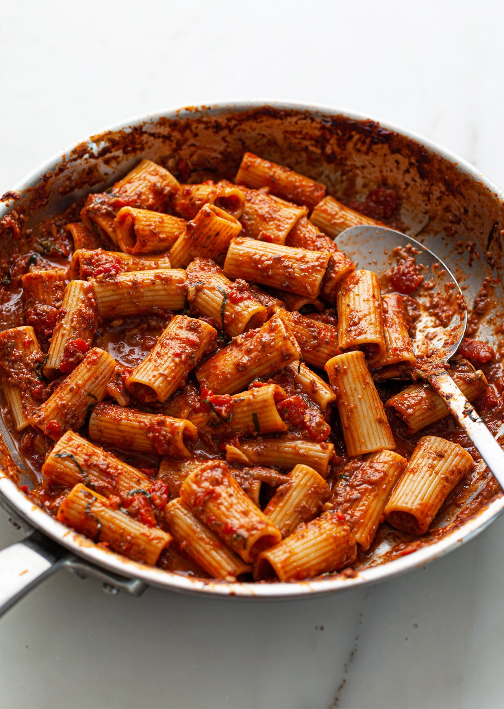

Odin Recipes
Eggplant and Mushroom Rigatoni

Description
A dish made after finding some eggplant and mushrooms which were sitting
in the fridge for far too long. It is intended as a vegan take on
bolognese.
The pasta has a slightly sweet taste, given by deglazing the cooked
ingredients with cabernet sauvignon and balsamic reduction.
ingredients
- 2 tbsp olive oil
- 1 brown onion
- 3 garlic cloves
- 1 box of brown mushrooms
- 1 large eggplant
- 11⁄2 tsp sea salt
- 1⁄2 tsp black pepper
- 2 tbsp tomato paste
- 1 tsp oregano
- 1⁄2 tsp red pepper flakes
- 1⁄2 cup red wine
- 1⁄4 cup balsamic vinegar
- 1 can crushed tomatoes
- 1 350g pack of rigatoni
- 1⁄2 cup reserved pasta water
- fresh parsley or basil to serve